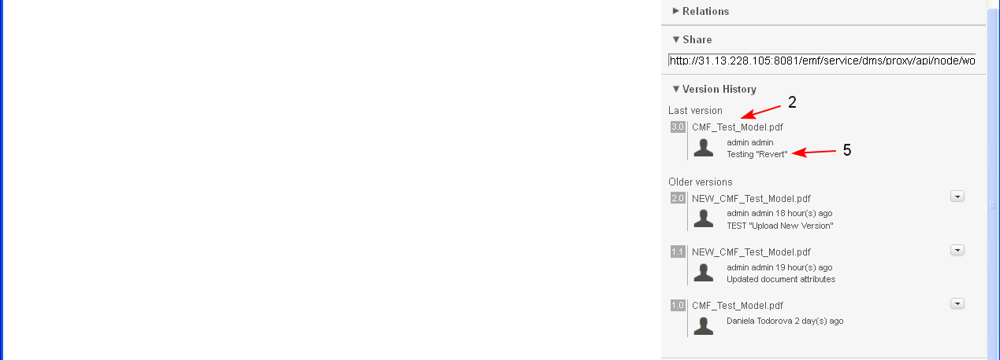

Users have the ability to revert to a historic (previous) version of the document in a case, in order to replace the existing current version of the document.
Preconditions
The operation is performed only for historic versions of a document.
The document is opened for preview.
- The user selects button "Revert" (1-2), for a selected older version of the document.

- The system opens a screen where the user selects (1) whether the changes in the new version are "Major" or "Minor". By default the "Minor" version is selected.
- In case of "Minor" document changes - the minor version number is incremented: Example: v1.0 becomes v1.1
- In case of "Major" document changes - the major version number is incremented: Example: v1.1 becomes v2.0
The user enters a Description (2) (mandatory) of the changes and clicks the button "Save" (3).

- The system opens the screen of the newly uploaded version of the document. The content of the document is changed to the content of the selected older version (1).
- Next to the Title of document the new version number is recorded (2).
- All metadata details of the selected older version are restored in the new current version except for "Last modified on" and "Modified on" (3-4).
- The new version of the document is attached to the case - Title and Description of the document are preserved as they were in the old version.
- The new version and of the document is saved in section Document History/ Last Version. The entered description is visible under the name of the user who reverted to the older version (5).
- The old (former current) version of the document is saved in section Document History/ Old Versions.

